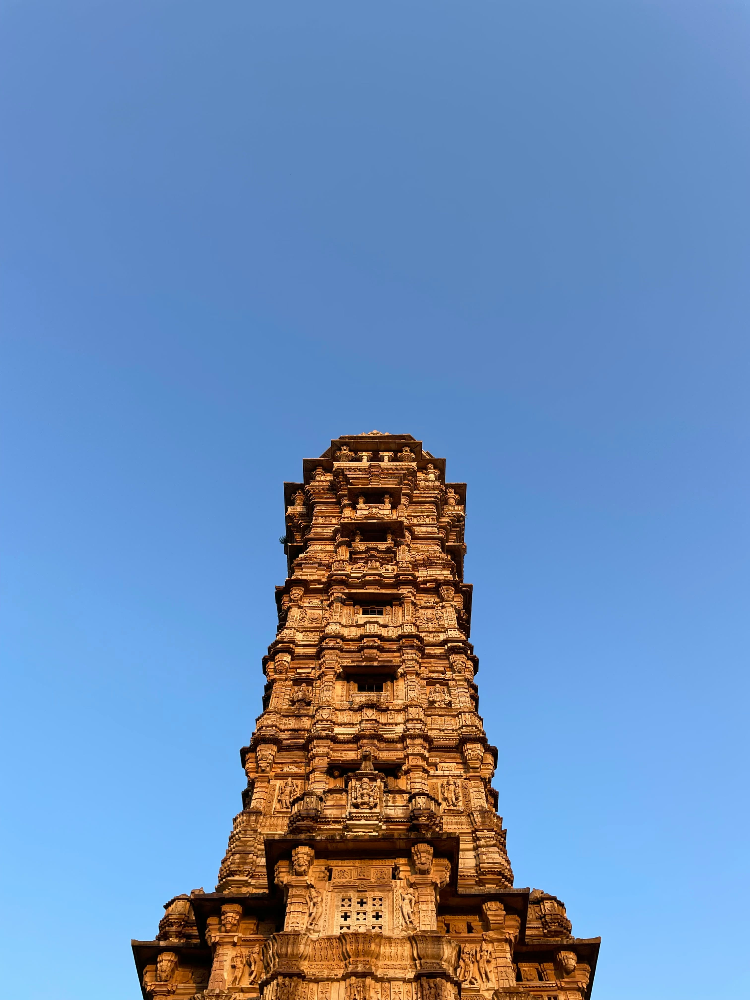
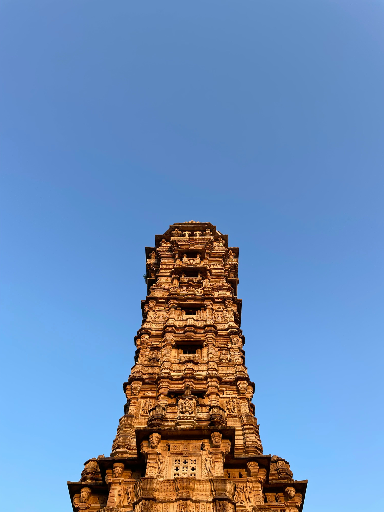

MY GALLERY
The Taj Mahal is a white marble
mausoleum located in Agra, India, on the south bank of the Yamuna River. It was commissioned
by the Mughal emperor Shah Jahan in 1632 to house the tomb of his wife, Mumtaz Mahal.
The Taj Mahal is renowned for its intricate design, which blends Persian, Turkish, Indian, and Islamic architectural styles.
It's considered a symbol of eternal love and is one of the most iconic landmarks in the world.
India Gate is primarily famous as a
war memorial that commemorates the 70,000 Indian soldiers who died during World War I and
the Third Anglo-Afghan War. It's a highly recognizable landmark in Delhi and is a popular
tourist destination, known for its architectural grandeur and historical significance.
Humayun's Tomb is a significant
mausoleum in Delhi, India, serving as the final resting place for the second Mughal Emperor,
Humayun. Built by his widow, Hajj Begum (also known as Biga Begum), it's considered the
first substantial example of Mughal architecture in India, with Persian influences. The tomb
is a UNESCO World Heritage Site and is renowned for its intricate design and beautiful
garden, the Char Bagh, which is a Persian-style garden.
Safdarjung's Tomb is the
last enclosed garden tomb in Delhi in the tradition of Humayun's Tomb, though it if far less
grand in scale. It was built in 1753- 54 as mausoleum of Safdarjung, the viceroy of Awadh
under the Mughal Emperor, Mohammed Shah.
At the break of dawn, the majestic
India Gate stands tall, bathed in the soft golden light of the morning sun. A solitary
street vendor, bundled against the morning chill, pushes his cart filled with
paint-splattered supplies, his quiet resilience a contrast to the towering monument's silent
grandeur. Amidst the bustling city, this moment captures a story of perseverance under the
shadow of history.
 Qutub Minar is a UNESCO World
Heritage Site located in Delhi, India. It is one of the tallest brick minarets in the world,
standing at approximately 73 meters (239.5 feet). Built in 1193 by Qutb-ud-din Aibak, the
founder of the Delhi Sultanate, the minar was completed by his successor, Iltutmish, and
later saw further modifications by Firoz Shah Tughlaq.
Gateway of India is a historic
monument located in Mumbai, India. It was built to commemorate the visit of King George V
and Queen Mary to India in 1911. The construction of the Gateway began in 1913 and was
completed in 1924, designed by British architect George Wittet in the Indo-Saracenic
architectural style, which combines elements of Hindu, Muslim, and European
architecture.
Lodi Garden is a beautiful
historical park located in New Delhi, India. Spanning over 90 acres, it is home to several
tombs and structures dating back to the Lodi Dynasty (15th-16th centuries), which ruled
parts of Northern India before the rise of the Mughal Empire.
A gopuram is a monumental tower that
serves as the main entrance to a Dravidian-style Hindu temple. These towers are typically
ornate, richly decorated with intricate sculptures, and can be found in southern India and
Sri Lanka. Gopurams are a defining feature of the Dravidian style of temple architecture and
symbolize the gateway to the spiritual realm.

Chittor Fort, also known as
Chittorgarh Fort, is one of the largest forts in India and a UNESCO World Heritage Site.
Located in the city of Chittorgarh in Rajasthan, it is a symbol of Rajput bravery, chivalry,
and sacrifice.
Jalakandeswarar
Temple is a historic Hindu temple dedicated to Lord Shiva, located inside the Vellore Fort
in Vellore, Tamil Nadu, India. The temple is known for its stunning Dravidian architecture,
intricate carvings, and historical significance.
The Kirti Stambh of Sailana is a
remarkable 72-foot-tall Jain monument located in the town of Sailana, within the Ratlam
district of Madhya Pradesh, India. Constructed in the 15th century by the Jain merchant
Dhanaji Shah, this tower is dedicated to Lord Rishabhanatha, the first Tirthankara in
Jainism.
Dhankar Monastery, also known as
Dhankar Gompa, is a historic Buddhist monastery perched dramatically on a cliff in the Spiti
Valley of Himachal Pradesh, India. Situated at an altitude of approximately 3,894 meters
(12,774 feet), it overlooks the confluence of the Spiti and Pin Rivers, offering one of the
most breathtaking vistas in the region .
Mysore Palace (Amba Vilas Palace)
is a stunning example of Indo-Saracenic architecture, this palace is the former residence of
the Wadiyar dynasty. It's especially captivating when illuminated with nearly 100,000 lights
during evenings on Sundays and public holidays
Panna Meena ka Kund is a captivating 16th-century stepwell located in the
town of Amer, near Jaipur, Rajasthan. This architectural gem showcases the ingenuity of
ancient water management systems and serves as a testament to the region's rich cultural
heritage.
Qutub Minar is a UNESCO World
Heritage Site located in Delhi, India. It is one of the tallest brick minarets in the world,
standing at approximately 73 meters (239.5 feet). Built in 1193 by Qutb-ud-din Aibak, the
founder of the Delhi Sultanate, the minar was completed by his successor, Iltutmish, and
later saw further modifications by Firoz Shah Tughlaq.
Gateway of India is a historic
monument located in Mumbai, India. It was built to commemorate the visit of King George V
and Queen Mary to India in 1911. The construction of the Gateway began in 1913 and was
completed in 1924, designed by British architect George Wittet in the Indo-Saracenic
architectural style, which combines elements of Hindu, Muslim, and European
architecture.
Lodi Garden is a beautiful
historical park located in New Delhi, India. Spanning over 90 acres, it is home to several
tombs and structures dating back to the Lodi Dynasty (15th-16th centuries), which ruled
parts of Northern India before the rise of the Mughal Empire.
A gopuram is a monumental tower that
serves as the main entrance to a Dravidian-style Hindu temple. These towers are typically
ornate, richly decorated with intricate sculptures, and can be found in southern India and
Sri Lanka. Gopurams are a defining feature of the Dravidian style of temple architecture and
symbolize the gateway to the spiritual realm.

Chittor Fort, also known as
Chittorgarh Fort, is one of the largest forts in India and a UNESCO World Heritage Site.
Located in the city of Chittorgarh in Rajasthan, it is a symbol of Rajput bravery, chivalry,
and sacrifice.
Jalakandeswarar
Temple is a historic Hindu temple dedicated to Lord Shiva, located inside the Vellore Fort
in Vellore, Tamil Nadu, India. The temple is known for its stunning Dravidian architecture,
intricate carvings, and historical significance.
The Kirti Stambh of Sailana is a
remarkable 72-foot-tall Jain monument located in the town of Sailana, within the Ratlam
district of Madhya Pradesh, India. Constructed in the 15th century by the Jain merchant
Dhanaji Shah, this tower is dedicated to Lord Rishabhanatha, the first Tirthankara in
Jainism.
Dhankar Monastery, also known as
Dhankar Gompa, is a historic Buddhist monastery perched dramatically on a cliff in the Spiti
Valley of Himachal Pradesh, India. Situated at an altitude of approximately 3,894 meters
(12,774 feet), it overlooks the confluence of the Spiti and Pin Rivers, offering one of the
most breathtaking vistas in the region .
Mysore Palace (Amba Vilas Palace)
is a stunning example of Indo-Saracenic architecture, this palace is the former residence of
the Wadiyar dynasty. It's especially captivating when illuminated with nearly 100,000 lights
during evenings on Sundays and public holidays
Panna Meena ka Kund is a captivating 16th-century stepwell located in the
town of Amer, near Jaipur, Rajasthan. This architectural gem showcases the ingenuity of
ancient water management systems and serves as a testament to the region's rich cultural
heritage.